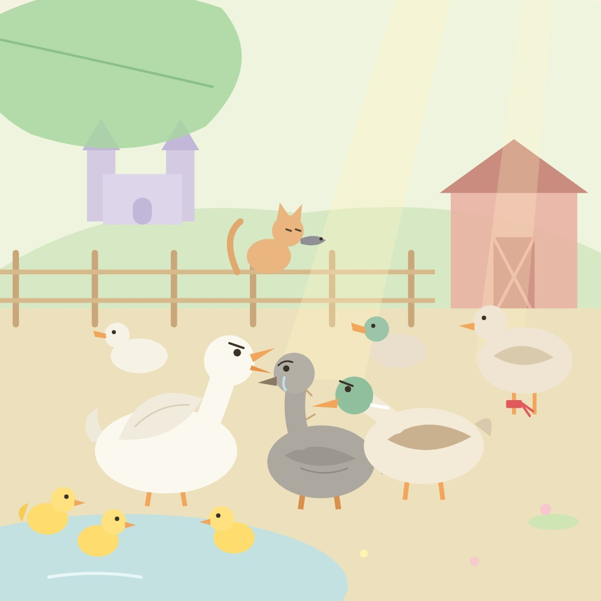

6 / 15
오리 농장
어미 오리는 아이들을 데리고 오리 농장에 갔어요. 다리에 빨간 끈을 맨 나이 든 오리 할머니께 인사도 시켰지요.
그런데 다른 오리들이 수군거렸어요. “저렇게 못생긴 오리는 처음 봐!”
한 오리가 달려들어 회색 오리의 목을 콱 물었어요. “그 애를 내버려 둬요! 아무 잘못도 안 했잖아요!”

6 / 15
어미 오리는 아이들을 데리고 오리 농장에 갔어요. 다리에 빨간 끈을 맨 나이 든 오리 할머니께 인사도 시켰지요.
그런데 다른 오리들이 수군거렸어요. “저렇게 못생긴 오리는 처음 봐!”
한 오리가 달려들어 회색 오리의 목을 콱 물었어요. “그 애를 내버려 둬요! 아무 잘못도 안 했잖아요!”